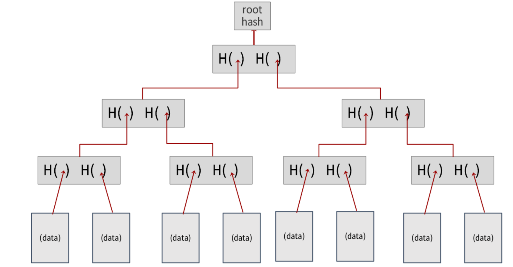

서울대학교 컴퓨터공학과 권태경 교수님의 "Topics in Computer Networks" 강의를 필기한 내용입니다.
다소 잘못된 내용과 구어적 표현 이 포함되어 있을 수 있습니다.
Certificate Transparency
#symlink 내용 옮겨짐
- CA 를 사칭해서 인증서를 발급해 주는 문제를 해결하기 위해
- 정당한 CA 가 맞는지 인증하는 검증절차를 마련
Certificate Pinning
- 믿을 수 있는 ca 리스트를 유지하는 것
- static: 브라우저 설치파일에 내장
- dynamic: 브라우저 첫 실행시 다운로드
- cert update/revocation issue 가 있어 더이상 사용하지 않음
CT
- CA 가 인증서를 발급하면 그것을 certificate infrastructure 에 업로드해서 브라우저에서 검증
- repository
- 저장소는 log server 라고 부르고, merkle tree 를 이용해 관리된다
- append only 특징
- 모니터링하는 놈이 있어서 인증서가 잘못 발급되었을 때에는 도메인 holder 가 ca 에게 말해서 어떤 놈이 잘못되었는지를 가리고 잘못된 놈을 revoke 한다
- 과정은 다음과 같다
- ca 는 pre-certifiacte 를 생성해서
- 그것을 log server 에 보냄
- signed certificate timestamp
- (6page, 14”)
- SCT: 이 인증서가 log server 에 업로드될 것이라는 약속
- (domain holder 가 log server 에 직접 접근하는 게 아니고?) monitor: domain holder 는 monitor 에 돈을 주고 자신의 domain 과 동일한 domain 의 인증서가 log server 에 등록되면 자신에게 알려달라고 함
Merkle Tree
Hash func
#symlink 내용 옮겨짐
- input length 에 관계없이 output length 는 정해져 있음
- 입력이 같으면 출력도 같음, 입력이 다르면 출력도 다름
- collision: 입력이 다른데 출력이 같은 경우
- 입력값의 집합 에 비해 출력값의 집합이 더 작기 때문에
- 이러한 collision 이 당연히 가능하다
- 하지만 확률이 너무나 작아서 collision 이 발견되기 힘들다
- md5 나 sha1 같은 경우에는 collision 이 발견돼서 deprecated 되었고, 다른 sha256 같은 애들이 사용중이다
- 따라서 hash 함수는 collision 보호가 아주 중요하다
- One-way function: digest 를 가지고 원본을 찾을 수는 없다 (불가능하지는 않음; 확률적으로 희박함)
- hash func 는 비트 하나만 바꿔도 결과가 완전히 달라진다
- hash pointer: 입력값 x 에 대한 hash(x) 관계를 이거라고 부르는듯
- hash pointer 를 활용한 linked list 가 blockchain 인 것
- 변경을 감지하기 용이함
Merkle Tree
#symlink 내용 옮겨짐
- hash pointer 의 linked list 가 block chain 이라면, hash pointer 의 tree 는 merkle tree 임

- leaf 의 데이터가 변경되면 이게 쭉 올라가서 root hash 까지 전부 바뀌게 된다.
- proving membership
- 한 데이터와
- 해당 데이터가 root hash 까지 올라가는데 필요한 hash 들을 주면
- hash(hash(h(data) + hash1) + hash2) 뭐 이런식으로 해서 root hash 와 같은지 판단해서 해당 tree 에 포함되어 있는지 확인 가능
- root hash 가 변경되지 않았다면 leaf data 가 전부 변경되지 않았다는 것이 보장됨
- 두 root hash 를 hash 해서 새로운 root hash 를 만드는 방법으로 두 tree 를 병합하는 것이 가능함
- consistency proof: 42”
- 변경감지, entity 추가 등의 내용이었던 것 같다
- inclusion proof: 위에서 말한 대로 경로상에서 필요한 다른 hash 가 제공되면 가능
Merkle Tree in CT
#symlink 내용 옮겨짐
- 여기서 data 가 인증서? domain? 이 되고 log server 에 이런 tree 가 있어서 인증서가 이미 발급되었는지 확인함
- CT 에서 monitor 는 log server 를 계속 확인하면서 client 의 cert 가 생성되었는지 확인하고, client 에게 알려준다
- 그 다음에는 client 가 CA 한테 말해서 해당 인증서를 revoke 해달라고 부탁한다
- 뭔가 놓침 48”
- CA 는 여러 log server 에 이것을 업로드 해서 (따라서 SCT 도 여러개) HA 구성을 할 수 있다
- 즉, 한 log server 가 죽어도 cert validation 이 가능해지는 것
- 하지만 이 경우에 당연히 문제가 되는 점은 cert 의 크기가 커지기 때문에 용량이나 전송속도 등에서 불이익을 받을 수 있다
- 몇개 이상의 log server 에서 approved 받아야 하는지는 브라우저마다 정책이 다르다
- 크롬같은 경우에는 만료 기간 180 일을 기준으로, 적으면 2곳, 많으면 3곳
- (시험범위는 아니지만) 추가적인 내용들
- browser 가 sct 가 담긴 인증서를 받아 처리를 할 때에는 browser 딴에서는 별로 overhead 가 적지만, (아마?) log server 에 부하가 걸릴 수 있다? → 1’00”
- sct validation for browser 는 optional 하다 - overhead 때문에